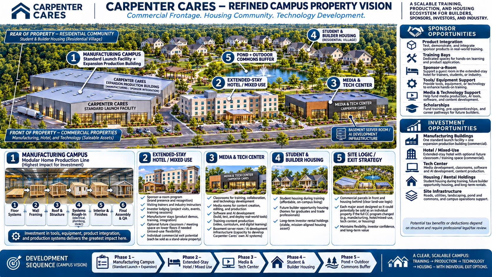

Sponsor & investment overview
Where partners participate
The proposed production and technology home for instructional video, editing, AI-guided learning development, virtual-build demonstrations and curriculum planning.
Potential partnership deliverables
- Video series underwriting and branded episodes
- AI learning-module and curriculum sponsorships
- Equipment, software, and studio integration
- Separate technology-development or facility financing
This page describes potential partnerships only. Actual sponsor payments, media rights, material ownership, lease terms and any investment arrangements must be documented separately. No tax deduction or investment return is promised.
Part of the larger campus
